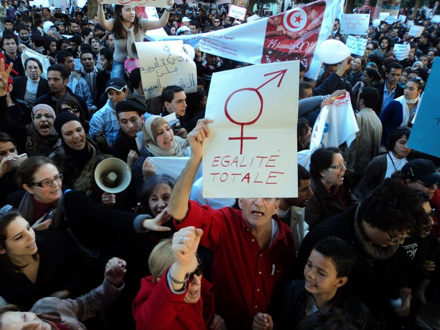
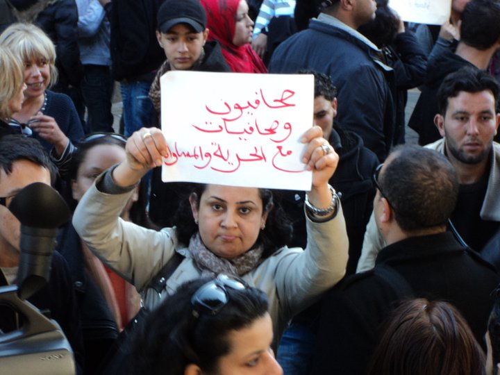
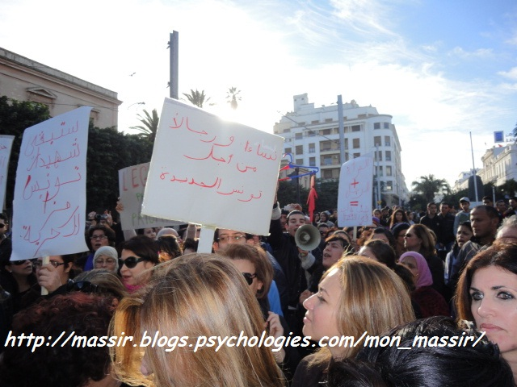
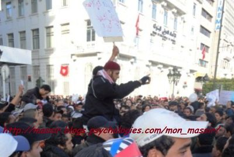
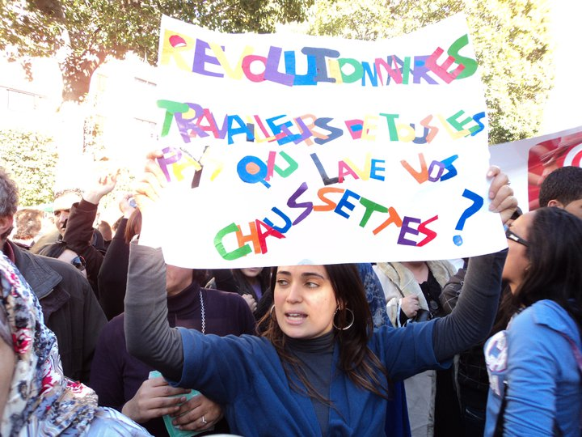

پذيرش > اخبار > تونس، انقلاب و مطالبات زنان : برابری، جدایی دین از سیاست، شهروندی /سوده (...)


 تونس، انقلاب و مطالبات زنان : برابری، جدایی دین از سیاست، شهروندی /سوده راد تونس، انقلاب و مطالبات زنان : برابری، جدایی دین از سیاست، شهروندی /سوده راد
10 بهمن 1389 - - نسخه قابل چاپ
تغییر برای برابری : تونس، کشوری درشمال آفریقا، با جمعیتی نزدیک به ده میلیون ششصد هزار نفر، در هفته های اخیر حیرت و تحسین ملت ها و شاید دولت ها را بر انگیخت. زنان با میانگین سنی 30,3 سال در مقابل 29,1 سال برای مردان، 65,3 درصد نرخ باسوادی را به خود اختصاص داده اند، در حالی که 83,4 درصد مردان تونسی با سواد هستند. تونس از سال 1881 مستعمره ی فرانسه بود و بالاخره در سال 1956 استقلال خود را بازیافت. اولین رییس جمهور تونس، حبیب بورگیبا، با سیاستی تک حزبی، 31 سال بر تونس حکومت کرد. او بنیادگرایان اسلامی را به شدت سرکوب کرد. در دوران او در بسیاری از قوانین تونس، برابری زنان و مردان مورد توجه قرار گرفت و این در جهان عرب و میان کشورهای اسلامی دستاوردی پر ارزش برای زنان به شمار می آمد. نوامبر 1987 زین العابدین بن علی رییس جمهور شد و در پنج دوره ی متوالی پنج ساله، بر تونس حکمرانی کرد.

سرکوب و خفقان در دوران بن علی، که همچنان بر سیاست تک حزبی تأکید داشت، آنچنان فراگیر بود که تجمع و گفت وگوی سایر احزاب و گروه های اجتماعی غیر ممکن بود. تا آنجا که با وجود تعهد تونس به کنوانسیون رفع هر گونه تبعیض علیه زنان، حتی برگزاری جلسات زنانه برای بحث و بررسی در مورد شرایط و حقوق زنان ممنوع بود. با این حال در این مدت، جدا از انجمن های وابسته به حکومت شبکه ها و انجمن های محلی غیر وابسته نیز به فعالیت های خود ادامه می دادند. در میان این مجموعه ها، «انجمن زنان دموکراسی خواه تونس» و «انجمن تحقیق و توسعه ی زنان تونسی» با عملکرد قوی و مستقل از قدرت حاکم، توانستند جایگاه ویژه ای در میان تأثیرگذارن بر حقوق زنان در تونس کسب کنند. از جمله فعالیت های اصلی این دو انجمن برگزاری کمپین برابری حق ارث، گشایش و مدیریت مرکز پذیرش و نگه داری زنان قربانی خشونت در تونس و راه اندازی مرکز مشاوره ی قضایی و انتشارات در این مورد است.

زنان تونس، در بین زنان تمامی کشورهای افریقا و مغرب، بیشترین نرخ اشتغال و با سوادی را دارند و این هوشیاری و آگاهی سیاسی موجب شد از اولین اعتراضات در کنار مردان و با شعار های مشترک: «کار، کرامت انسانی و آزادی» به خیابان ها بیایند. دو زن در اعتراضات کشته شدند، تعدادی هم زخمی و بسیاری هم مورد خشونت ضربات باتوم یا حتی کشیده شدن موهایشان شدند. پس از پیروزی انقلاب تونس که به گفته ی بسیاری از فعالان و سیاستمداران شبیه به هیچ انقلابی نیست، زنان برای اولین بار تصمیم گرفتند راهپیمایی مسالمت آمیزی را برای طرح مطالبات خود از حکومت جدید برگزار کنند. پیش تر، گروهی از زنان تونسی توماری را که در آن جدایی دین از سیاست و برابری در تمامی قوانین، خواسته های غیر قابل مذاکره زنان تونس مطرح شده بود امضا کردند و شمار امضا کنندگان با سرعت افزایش یافت.

روز شنبه، 29 ژانویه 2011، به دعوت انجمن زنان دموکراسی خواه تونس، انجمن تحقیق و توسعه ی زنان تونسی؛ کمیسیون زنان اتحادیه ی زنان شاغل تونسی، جمعیت برابری مغرب و کمیسیون زنان لیگ حقوق بشر تونس تجمعی در یکی از میادین اصلی پایتخت تونس برگزار شد تا نه تنها بر حمایت از حقوق برابر موجود تأکید شود، بلکه برابری در تمامی قوانین حاکم بر زندگی شهروندی و سیاسی مطالبه شود. شعار اصلی این تجمع«برابری، جدایی دین از سیاست، شهروندی» بود و همزمان در شهرهای مختلف چون پاریس تجمعاتی با همین شعار ها و با هدف حمایتی برگزار شد.

ولی گزارش های شهروندی، عکس ها و ویدیو های شهروندی، همه حاکی از یک واقعه است. هجوم اسلام گرایان افراطی به شرکت کنندگان در تجمع. خبر ها تأیید می کنند که گروهی از مردان به یکباره وارد خیل جمعیت شده اند و در حالی که شرکت کنندگان شعارهای چون «آزادی، برابری» سر می داده اند، شروع به فریاد زدن شعار های پایه ای انقلاب، چون « بن علی بیرون» ، و «آزادی، مردم سالاری» کردند و بدون توجه به یادآوری هدف این راهپیمایی راه پیش رفت راهپیمایی را متوقف کرده بودند.

کمی بعد از کنترل اولین گروه مهاجم، گروه دیگری مقابل وزارت زنان تونس سد راه راهپیمایان می شوند و با فریاد زدن جملاتی چون « زنان به آشپزخانه بروید» و «کفار، کفار» سعی در پراکنده کردن شرکت کنندگان داشته اند. به گفته ی شرکت کنندگان و بسیاری از زنان تونسی، آنها انتظار چنین برخوردهایی را نداشته اند و یک بار دیگر یادآوری می کنند که نخواهند گذاشت تجربه ی تونس، به دشته تجارب ایران، سودان، مصر و الجزیره بپیوندد و زنان تنها وسیله ای برای به قدرت رسیدن گروهی باشند که حقوق زنان را ضایع می کنند.
با این که تعداد شرکت کنندگان زیاد بوده است، هیچ یک از برگزار کنندگان مراسم، پس از پایان آن، تا کنون به طور رسمی اطلاعیه ای صادر نکرده اند.




برای دیدن ویدئوهای تظاهرات و حمله ی اسلامگرایان افراطیاینجا واینجارا ببینید .
برای اطلاعات بیشتر اینجاو اینجارا ببینید.

برای اطلاعات بیشتر در زمینه تونس و اتفاقات امروز می توانید این مطالب را بخوانید :
مصاحبه با نادیا شعبان، فعال حقوق زنان تونسی در فرانسه
گزارش یکی از شرکت کنندگان در راهپیایی تونس
ارسال به
بالاترین
،
توییتر
،
فریندفید
،
فیسبوک
در همين بخش :
 پروین ذبیحی برنده جایزه حقوق بشری سازمان غيردولتى اتريشى سودويند شد پروین ذبیحی برنده جایزه حقوق بشری سازمان غيردولتى اتريشى سودويند شد
پخش کارت پستال و بروشور در روز جهانی زن در تهران
تمدید زمان برای امضای بیانیهی جمعی از فعالان زن به مناسبت هشت مارس
مجوزی که در نطفه خفه شد
بیش از 2000 امضا در اعتراض به تبعیض های آموزشی به مجلس تحویل داده شد
ديگر بخش ها :
طرح یک میلیون امضا
|
مقالات
|
سایت نوشته ها
|
اخبار
|
گزارش كمپين
|
گفت و گو
|
علیه سکوت
|
كوچه به كوچه
|
نامه های شما
|
گزارش ویژه
|
گفتگو با اعضا
|
ویژه سالگرد کمپین
|
تصویر برابری
|
دل آرام علی
|
تریبون
|
مقالات
|
تاریخ شفاهی
|
خارج از چارچوب
|
کتابخانه
|
درباره کمپین
|
کمپین در شهرها
|
کمپین در بند
|
صدای تغییر
|
ویژه 22 خرداد
|
لایحه حمایت از خانواده
|
گالری
|
عشا مومنی
|
امیر یعقوبعلی
|
خدیجه مقدم
|
راحله عسگری زاده و نسیم خسروی
|
پروین اردلان،جلوه جواهری، مریم حسین خواه، ناهید کشاورز
|
زینب پیغمبرزاده
|
سعیده امین، سارا ایمانیان، محبوبه حسین زاده، ناهید کشاورز و همایون نامی
|
احترام شادفر
|
نسیم سرابندی زاده،فاطمه دهدشتی
|
وبلاگ مهمان
|
پرونده خرم آباد
|
دستگیری ها
|
مریم مالک
|
پرستو اللهیاری
|
مهرنوش اعتمادی
|
سمیه رشیدی
|
Other Languages
|
همراهان
|
«فراخوان کمپین ده روز با بهاره هدایت»
| English
|